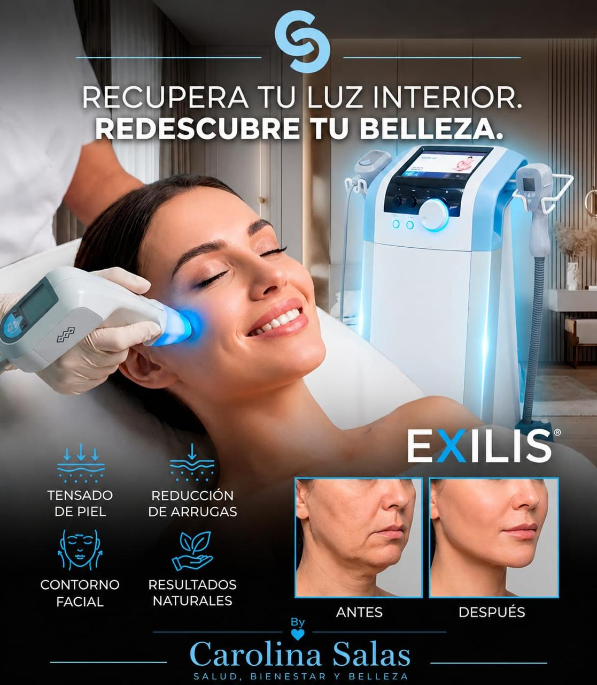
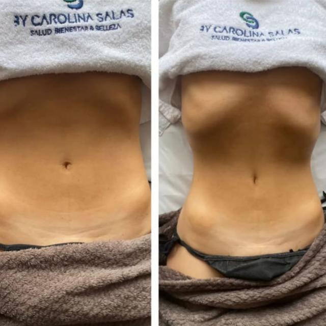
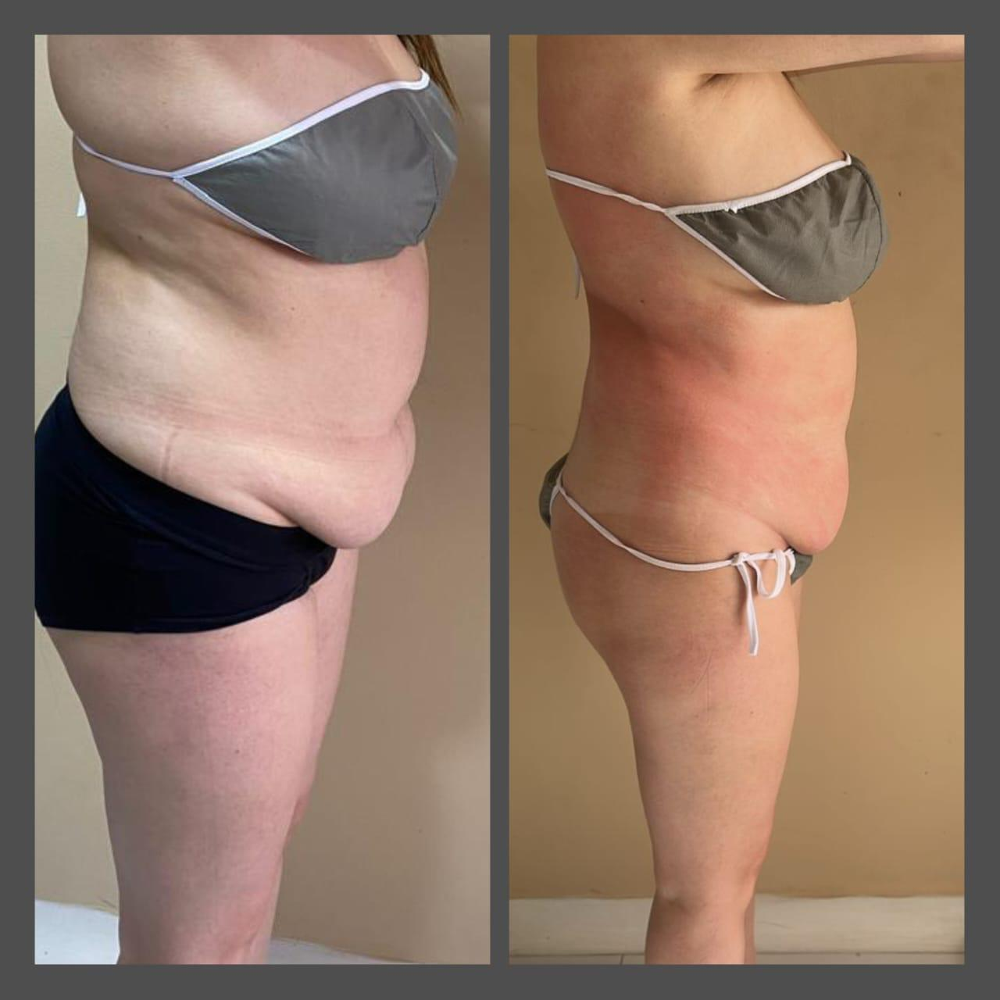
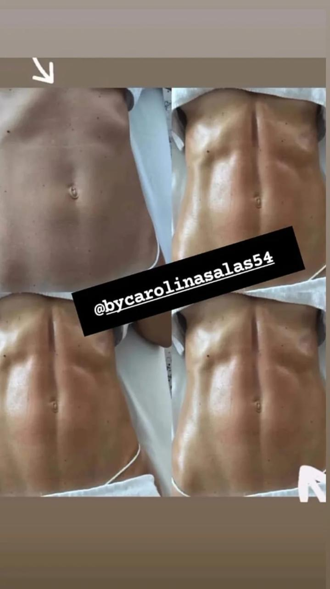
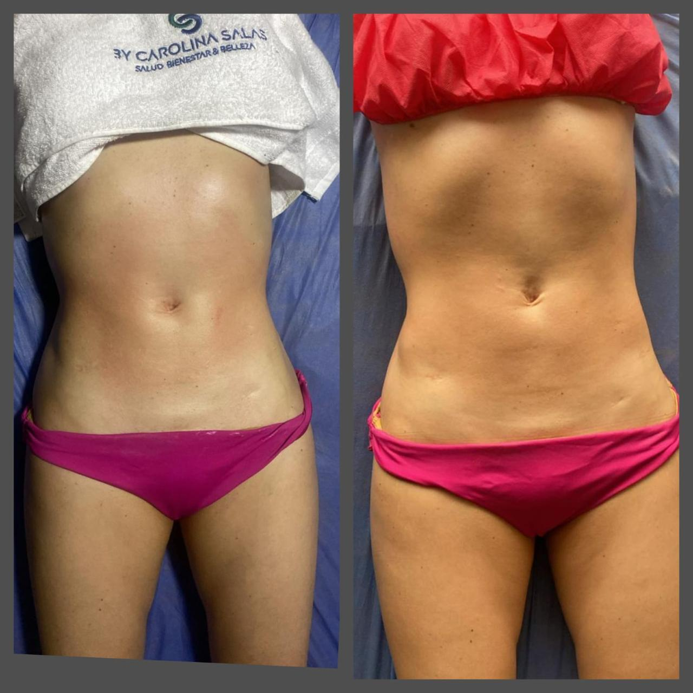

M-Sculp — Esculpido Electromagnético
Tecnología HIFEM que genera +20.000 contracciones por sesión. Esculpe, tonifica y reduce hasta 30% de grasa localizada.
Agendar cita
Resultados reales
Marcación abdominal, reducción de grasa localizada y tonificación corporal con tecnología de última generación. Resultados visibles desde las primeras sesiones.
Desliza para comparar antes y después


Tecnología corporal de última generación en Bogotá
Tecnología HIFEM que genera +20.000 contracciones por sesión. Esculpe, tonifica y reduce hasta 30% de grasa localizada.
Agendar cita
Radiofrecuencia monopolar que estimula colágeno y elastina. Reafirma, reduce celulitis y redefine contornos.
Agendar cita
Radiofrecuencia + ultrasonido BTL aprobado por FDA. Rejuvenece la piel y reduce grasa sin cirugía.
Agendar cita
Tratamiento facial no invasivo que reafirma el óvalo del rostro y atenúa líneas de expresión. Efecto lifting natural sin agujas ni cirugía.
Agendar cita¿Lista para empezar?
Cuéntanos tu objetivo y diseñamos el plan ideal para ti.
Tu primera valoración.
Testimonios reales de nuestras pacientes
Transformaciones con nuestra tecnología corporal







Resultados reales con hipopresivos y tratamientos corporales en Bogotá
Todo lo que necesitas saber sobre nuestros tratamientos
Los hipopresivos son ejercicios de baja presión que fortalecen el suelo pélvico, reducen la cintura, mejoran la postura y ayudan en la recuperación postparto. Son especialmente efectivos para tratar diástasis abdominal e incontinencia urinaria.
Los resultados varían según el tratamiento y la persona. Con M-Sculp y Tensamax, muchos pacientes notan cambios visibles desde la primera sesión. Para resultados óptimos se recomiendan entre 4 y 8 sesiones.
No. Todos nuestros tratamientos son no invasivos e indoloros. Pueden generar una leve sensación de calor o contracción muscular, pero sin dolor. Las sesiones son cómodas y relajantes.
Sí. Las sesiones personalizadas de hipopresivos están diseñadas específicamente para la recuperación postparto, ayudando a cerrar la diástasis abdominal y fortalecer el suelo pélvico de forma segura y progresiva.
Estamos ubicados en la Cra 15 # 119-11, Edificio Epcocentro, Consultorio 427, en Bogotá, Colombia. Atendemos de lunes a viernes de 7:00 AM a 6:00 PM y sábados de 8:00 AM a 1:00 PM.
Puedes agendar tu cita directamente por WhatsApp al +57 311 606 3492 o a través de nuestro Instagram @bycarolinasalas54.
Agenda tu cita y comienza tu transformación corporal
Cra 15 # 119-11, Edificio Epcocentro, Consultorio 427
Bogotá — Colombia
Lunes a Viernes: 7:00 AM — 6:00 PM
Sábados: 8:00 AM — 1:00 PM
Domingos: Cerrado
+57 311 606 3492
contacto@carolinasalas.com